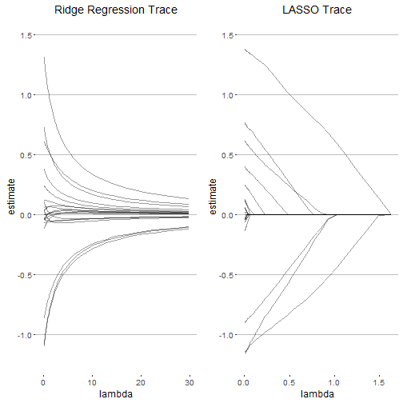
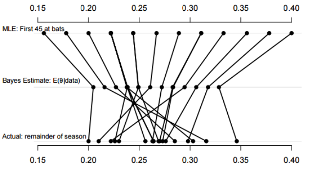

When do Biased Models Beat Unbiased?
- Always
- ish...
Ewan Keith
\[\operatorname{Bias}_\theta[\,\hat\theta\,] = \operatorname{E}_\theta[\,\hat{\theta}\,]-\theta\]
\[\min_{ \beta_0, \beta } \left\{ \frac{1}{N} \sum_{i=1}^N (y_i - \beta_0 - x_i^T \beta)^2 \right\} \text{ subject to } \sum_{j=1}^p |\beta_j| \leq t.\]



